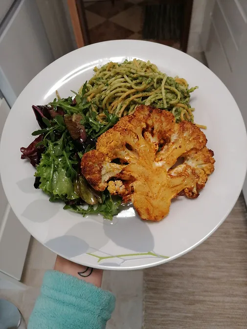

"Bife" de Couve Flor
Tempo de preparação
10min
Horas de Cozimento
1h
Tempo Total
1h10min
Porções
2

Ingredientes
“Bife” de Couve Flor:
- 1 couve flor inteira
- sal q.b
- alho em pó q.b
- pimenta preta q.b
- pimentão doce q.b
- azeite q.b
Pesto de Espinafres:
- 5 nozes removidas da casca
- 2 alhos picados
- 2 molhos de espinafres lavados e escorridos
- sal q.b
- 1 cebola inteira picada
- pimenta preta q.b
- manjericão fresco/seco q.b
- azeite q.b
Instruções
- Apare o caule e remova as folhas da couve flor.(Não retire muito ao caule senão o seu “bife” irá-se desfazer).
- Com uma faca grande, corte a couve flor longitudinalmente pelo centro num pedaço de 4 cm de espessura. (Dependendo da espessura do caule pode acabar por conseguir 2 ou 3 “bifes”).
“Bife” de couve flor:
- Pré aqueça o forno a 180ºC. Tempere o “bife” de couve flor dos dois lados com sal, alho em pó, pimenta preta, pimentão doce e azeite. Espalhe os temperos todos pela couve flor com as mãos, para que ao assar o “bife” esteja coberto de sabor.
- Coloque os “bifes” de couve flor numa assadeira, (esta não precisa de estar forrada) e dê alguns lanhos com uma faca no caule da couve para que asse mais rápido.
- Asse por cerca de 1h ou até ficarem dourados, crocantes e macios. Vá virando a couve de 15 em 15 minutos e pincelando com um bocado de azeite para que os bifes não fiquem secos.
Pesto de Espinafres:
- Coloque as nozes numa assadeira e leve a tostar por 5-8 minutos.
- Numa frigideira, leve o alho e os espinafres temperados com sal a saltear num fio de azeite.
- Transfira para um liquidificador a cebola picada, as nozes levemente assadas, os espinafres salteados, o manjericão, a pimenta preta e o azeite até dar liga e ficar uma mistura homogênea, não muito líquida.
- Misture o pesto com uma massa esparguete colorida, acompanhe com o “bife” de couve flor e uma mistura de alfaces e rúcula temperada com sal, azeite e limão!